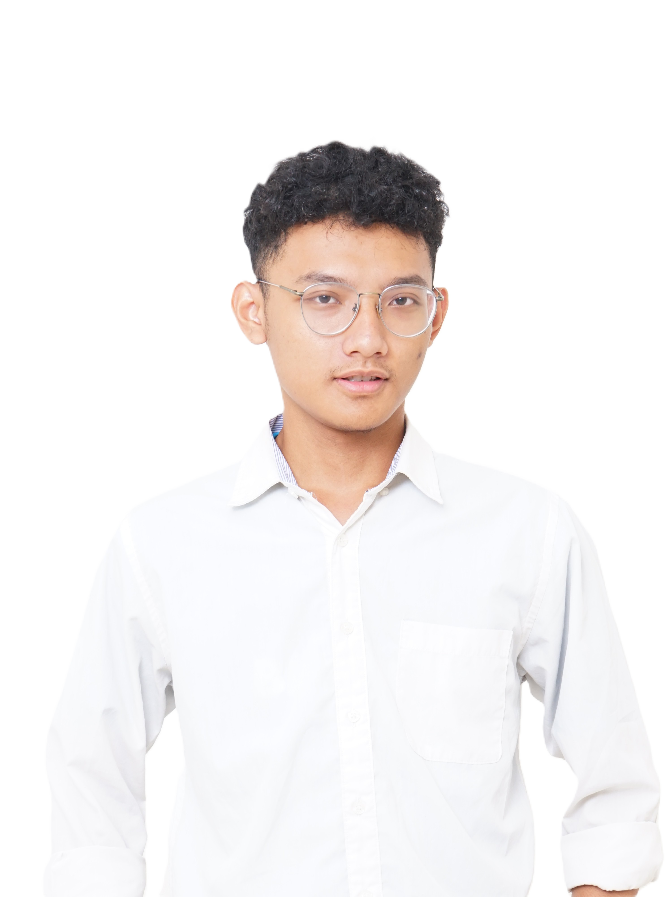

BAYU MUHAMMAD NABIIL MAKARIM
GeoAI & GIS Engineer | Advanced OpenStreetMap Contributor
Highly driven GeoAI Engineer with a strong focus on geospatial automation and spatial data analytics. Proven expertise in developing custom Python-based tools and deep learning models (YOLO, DeepLabV3+, SegFormer) to extract features from drone and satellite imagery.